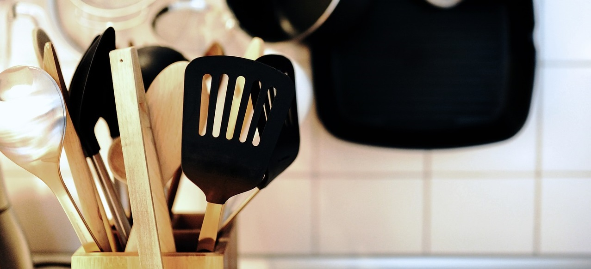

Vamos explorar as notáveis vantagens de cozinhar de forma prática e simples?
No mundo acelerado de hoje, onde o tempo é um bem precioso, a culinária prática e simples emergiu como uma graça salvadora para muitos indivíduos e famílias. A adoção dessa abordagem aos empreendimentos culinários oferece uma infinidade de benefícios que podem melhorar nossas vidas de várias maneiras. Desde a economia de tempo e dinheiro até a promoção de hábitos alimentares mais saudáveis.
Dicas e macetes, sempre com praticidade e simplicidade.
Audio
Sobre
Ah! Aqui é o local exato para você que nunca segurou uma faca e se enrola até para fritar um ovo. Venha comigo e veja o quanto cozinhar pode ser prazeroso, pratico e simples. Nos inspiramos no Movimento Comida de Verdade ou MCV, que por sua vez foi inspirado no tema da 5ª Conferencia Nacional de Segurança Alimentar (CONSEA), ocorrido em novembro de 2015- Brasília/DF, com a premissa básica e um tanto desafiadora de levar a população a voltar a se relacionar com o alimento de verdade e valorizar as relações em todas as dimensões no ato de preparar e de receber o alimento.
Então, topa esse desafio de aprender de uma vez por todas que cozinha não é tão difícil?
Clica aqui aqui e aproveite o nosso curso!
Objetivos
De forma simples e prática, explicar os conceitos básicos e técnicas de cocção usados diariamente na cozinha. Vamos nos familiarizar com os principais equipamentos e utensílios de cozinha, procurando sempre aplicar as normas de segurança e boas práticas.
